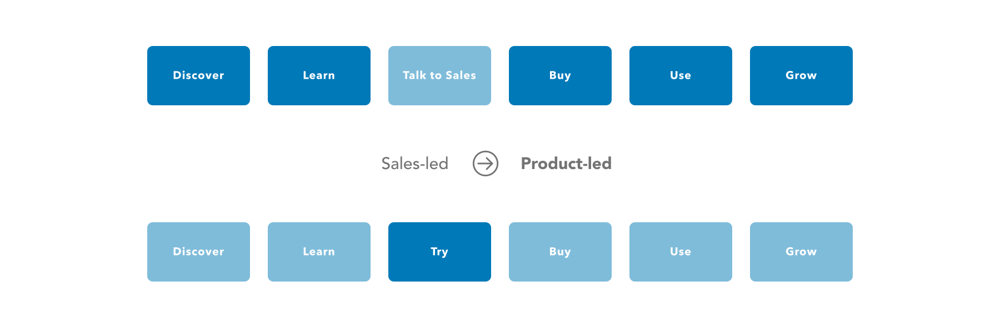
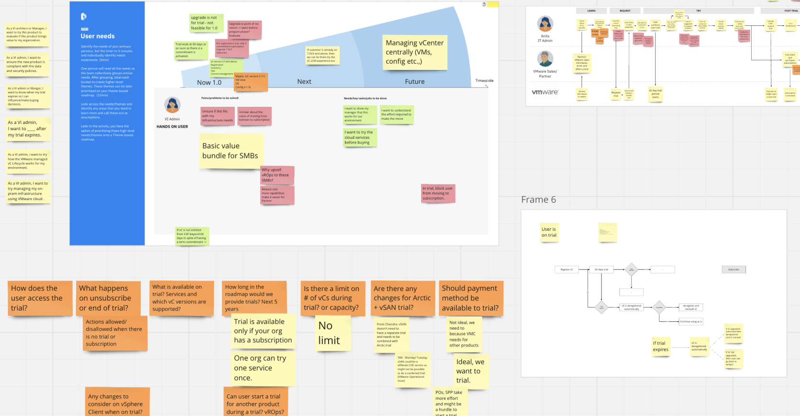
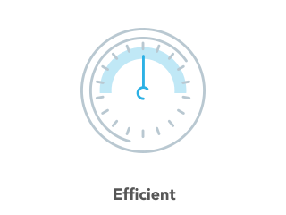
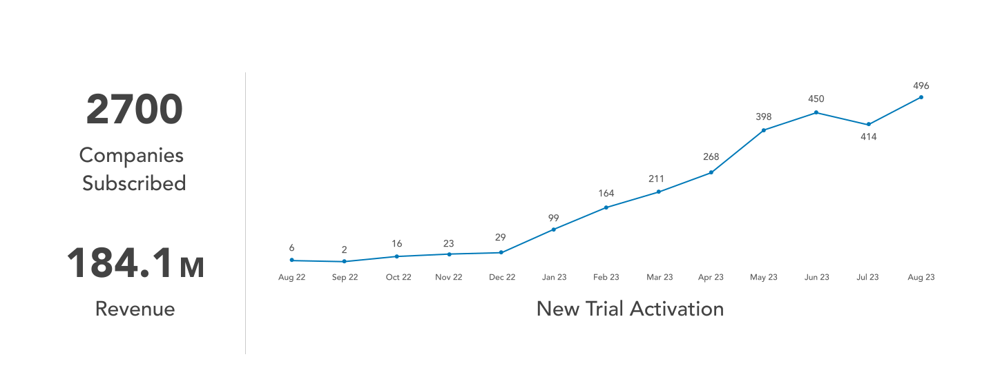
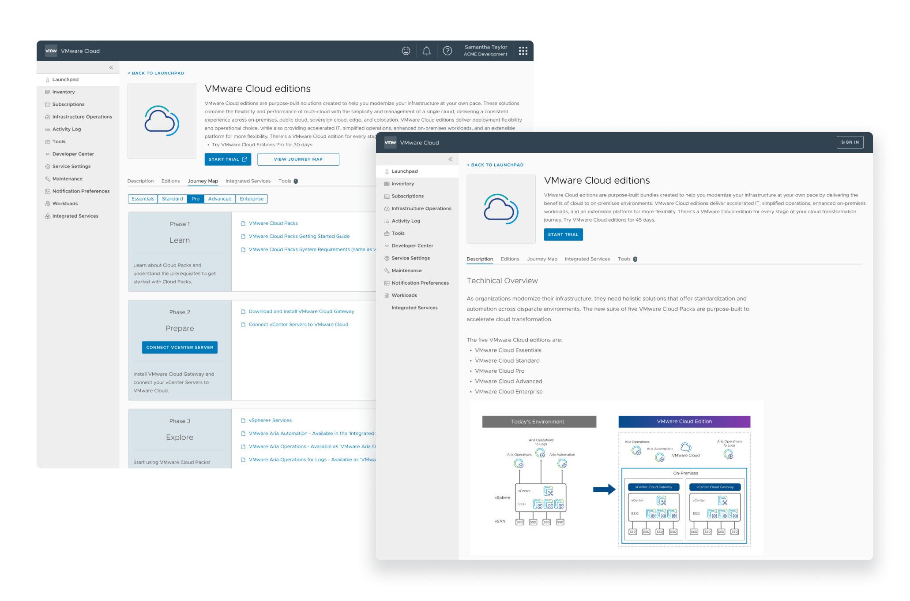

Free Trial Sign Up That's a significant milestone for VMware, transitioning from traditional perpetual licensing to subscription-based models and embracing the Software as a Service (SaaS) approach. Implementing a free trial is a crucial component in the product-led growth strategy, allowing users to experience the value of the product firsthand. This initiative marks a pivotal shift in how VMware engages with its users and drives adoption.
July 2021 ~ Oct 2021
Officially launched in June 2022
Design Lead
Interaction Design
User Research
Scope & outcome alignment
Product Manager
UI & Backend Engineering
Cross functional stakeholders
Content writer

On the other hand, IT admins faced difficulties in making informed decisions about adopting prospective products. While they received overview documents, they seldom had the opportunity to actually use the products and assess their performance with real data centers. This gap in practical experience made it harder for them to evaluate and make informed choices about adopting new solutions.



Given that the SaaS experience is a relatively uncharted territory due to the prevalence of on-premises products at VMware, generating a trial experience demands alignment across various business units. To gain valuable insights, I spearheaded six research sessions, engaging with a total of 45 users to discern their expectations. Users find the current experience overly complex. They are seeking a streamlined solution from VMware to facilitate their access to vSphere SaaS.

Researching trials from other vendors provided valuable insights, highlighting both strengths and weaknesses. This inspired me to create an illustrated trial flow for vSphere+.


1. Users may experience prolonged wait times from trial request to approval, potentially leading to drop-offs, as indicated by the marketing team's research.
2. Users might face concerns when transitioning from licensing to subscription-based entitlements, particularly in relation to their existing environments.
3. There is a concern among users about potential loss of access to their data centers at the end of the trial if they opt not to purchase a subscription. This is deemed unacceptable from the customers' perspective.
 To streamline the journey and address the issues
identified in the initial map, I collaborated closely with stakeholders across various business units.
By leveraging insights gleaned from customer research, we successfully reduced the number of steps in
the flow by 30% compared to the original process. This enhancement significantly improved the
overall user experience.
To streamline the journey and address the issues
identified in the initial map, I collaborated closely with stakeholders across various business units.
By leveraging insights gleaned from customer research, we successfully reduced the number of steps in
the flow by 30% compared to the original process. This enhancement significantly improved the
overall user experience.


'Request Trial' or 'Start Trial'
 Request Trial:
Request Trial:
For users: it takes longer to get approval after submitting
requests
For VMware: It's easier to handle and also save costs Start Trial:
Start Trial:
For Users: It saves time
For VMware:
it icreases cost but also increases visibility
Therefore, I recommend streamlining the workflow
and initiating a two-month trial period to assess the outcomes.
With security as a primary design principle, we developed on-premises software that is entirely managed and controlled by the users. This software facilitates the establishment of a connection between the on-premises data center and the cloud. The Cloud Gateway serves as the bridge, offering users the potential to experience cloud services while maintaining security.


Onboard vSphere+ by Using Customer-managed Cloud Gateway
I aimed to streamline the gateway onboarding process and offer users a clear overview of the subsequent steps before they begin.

Pair Cloud Gateway to VMware Cloud
User is able to use a secure pair code to pair the Cloud Gateway to VMware Cloud.

Connect Data Centers to Onboard vSphere+
After users connect the data centers to VMware Cloud. They are able to manage the entire on-prem infrastructure from the single pane of glass.

Challenge of Guiding Users
In the absence of an onboarding guide, the sales team traditionally provided user support during onboarding. To address this, I explored various options to create a comprehensive and user-friendly guideline for product familiarization.
On the other hand, IT admins faced challenges in making informed decisions about adopting prospective products. While they had access to overview documents, they seldom had the opportunity to use them in real-world scenarios or assess performance with actual data centers.


Integrated Onboarding Experience
After careful consideration, I decided to move forward with option 3, which seamlessly integrates the onboarding guide with VMware's support feature. This empowers users to consistently educate new team members using this valuable resource.

Engineering Pushback
'The users cannot go back to the previous state after the trial expires. Can you design something to inform users.'' Apparently it doesn't sound acceptable. So I conducted research sessiosn with users. The common feedback was 'I need to consider should I even try the product if my data center cannot go back to the previous state.' With the stronger voice from the end users, I was able to work with the product manager and engineering to make the worklfow right.


2. Revenue: The primary objective of the trial is to drive revenue growth. Evaluating the impact on revenue provides a crucial measure of the trial's value.
3. Satisfaction:‘Biggest change is the culture around how things can be done which was the initial hurdle.’
‘It is much easier to do POC where we can try something out in the product and we don’t have to plan out systems in our data center which changes how we try products.’
‘I love to just activate the trial at home!’

2. Collaborate with cross functional stakeholders: Get algined with broader teams can really help improve the possibility to unblock a lot of capabilities and it will eventually benefical to customers;
3. Embrace uncertainty: You will never know how the design will be evolved over time. Try to talk with more users and dive deeper to that domain.
 Building on the success of the vSphere+ trial and
the mature framework developed by the trial task force, we scaled the trial flow and integrated it into
our latest flagship offering, VMware Cloud Editions. This product was announced at VMware Explore in
August 2023 and is set to launch in late November.
Building on the success of the vSphere+ trial and
the mature framework developed by the trial task force, we scaled the trial flow and integrated it into
our latest flagship offering, VMware Cloud Editions. This product was announced at VMware Explore in
August 2023 and is set to launch in late November.
